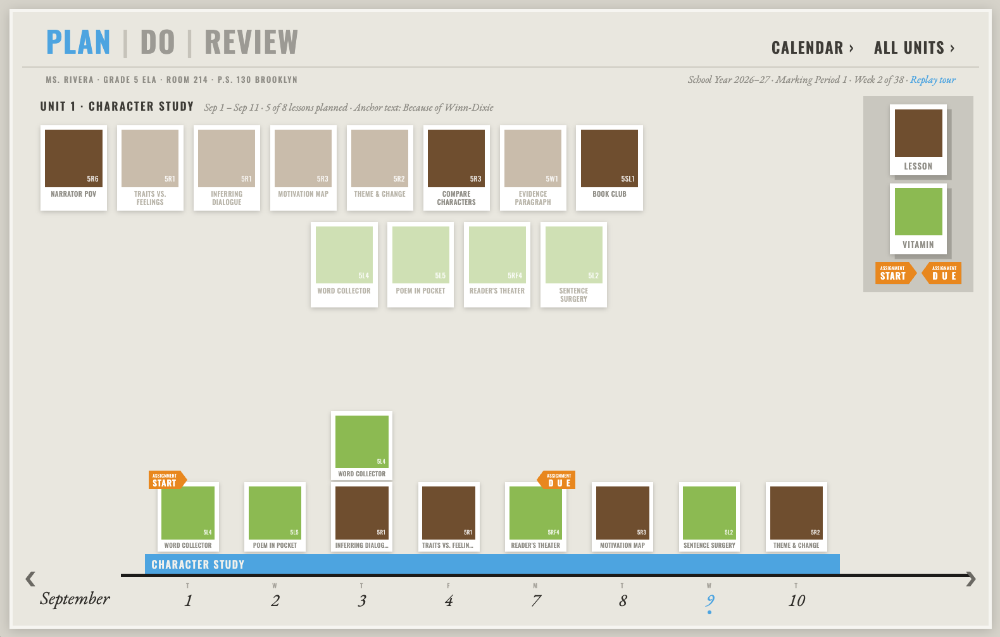
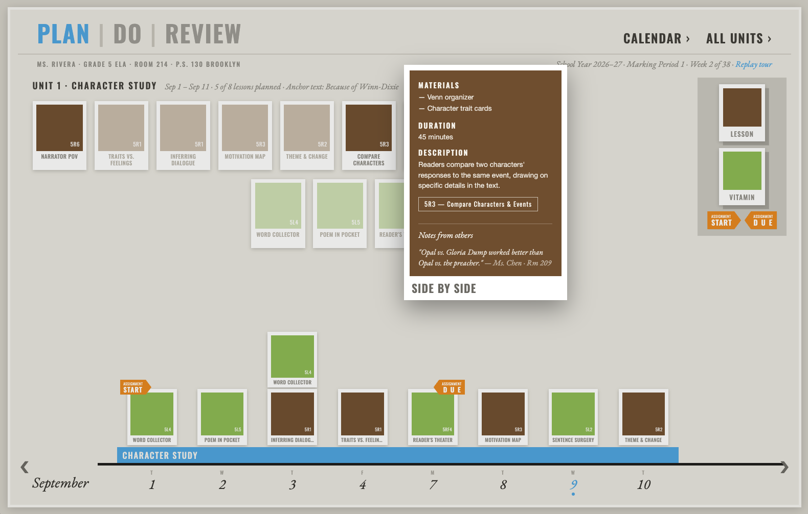
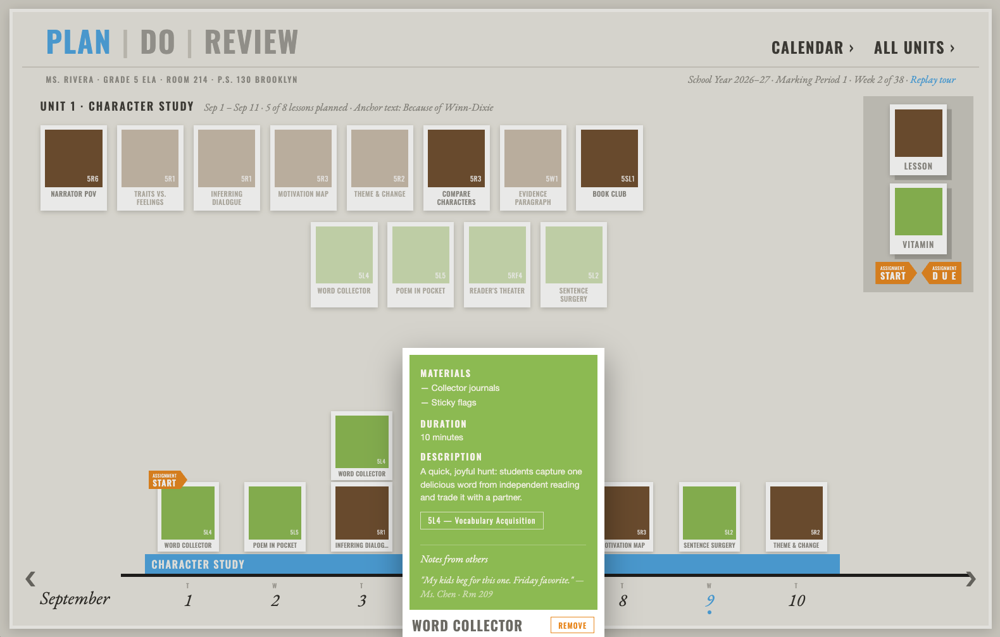
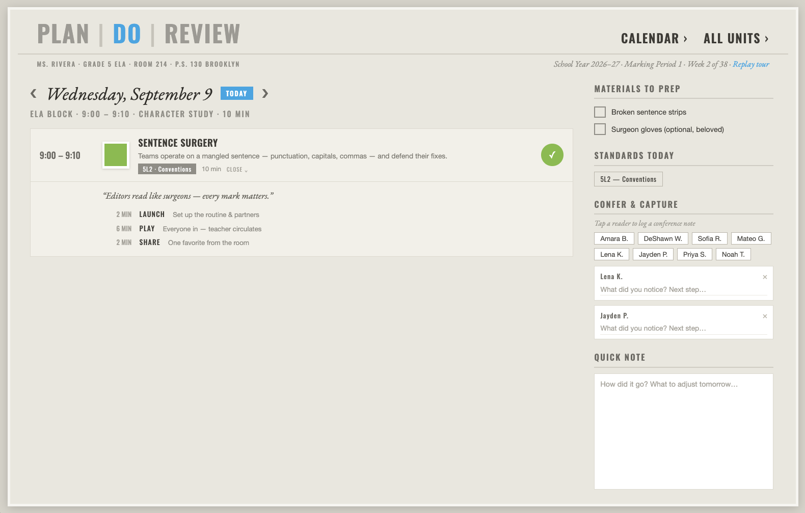
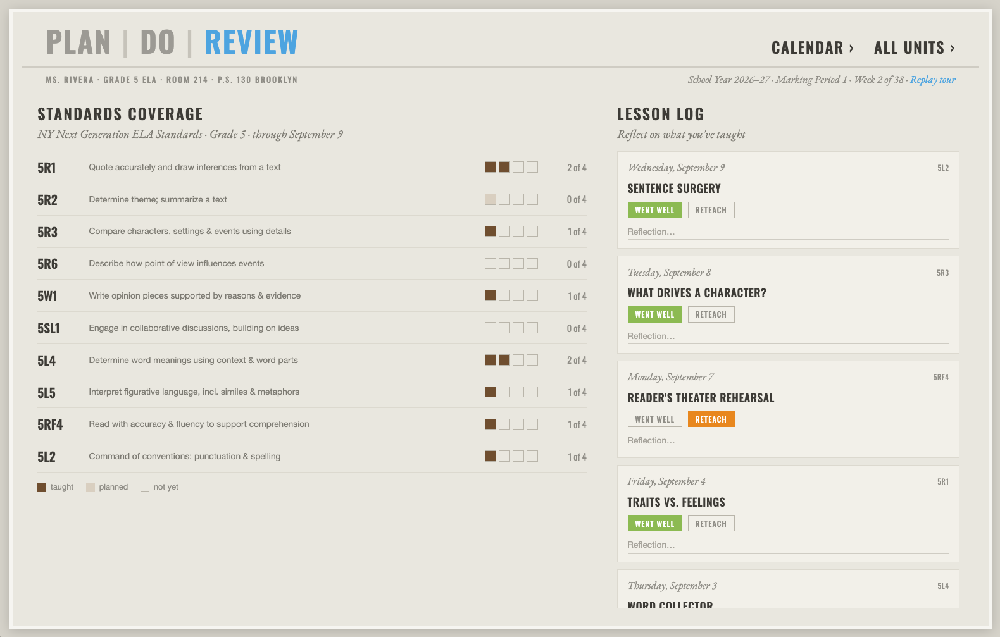
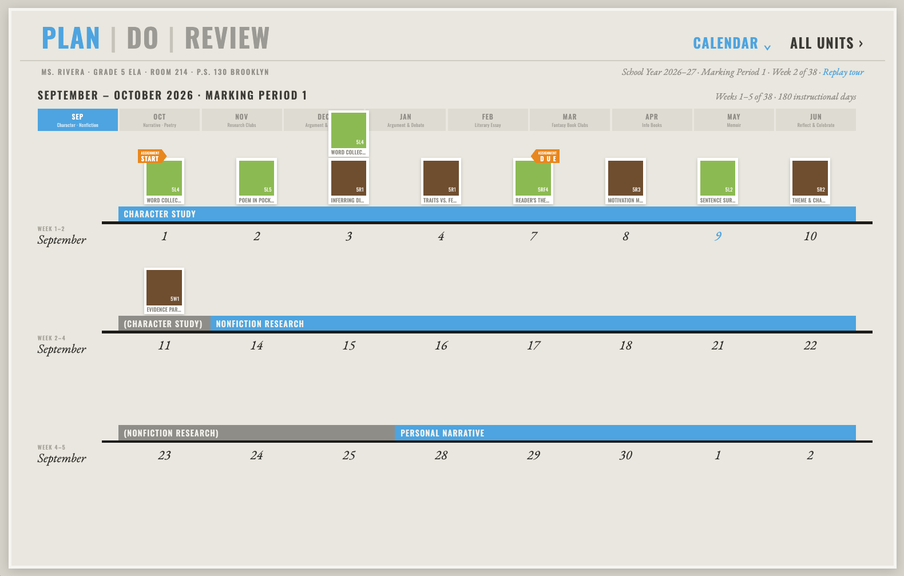
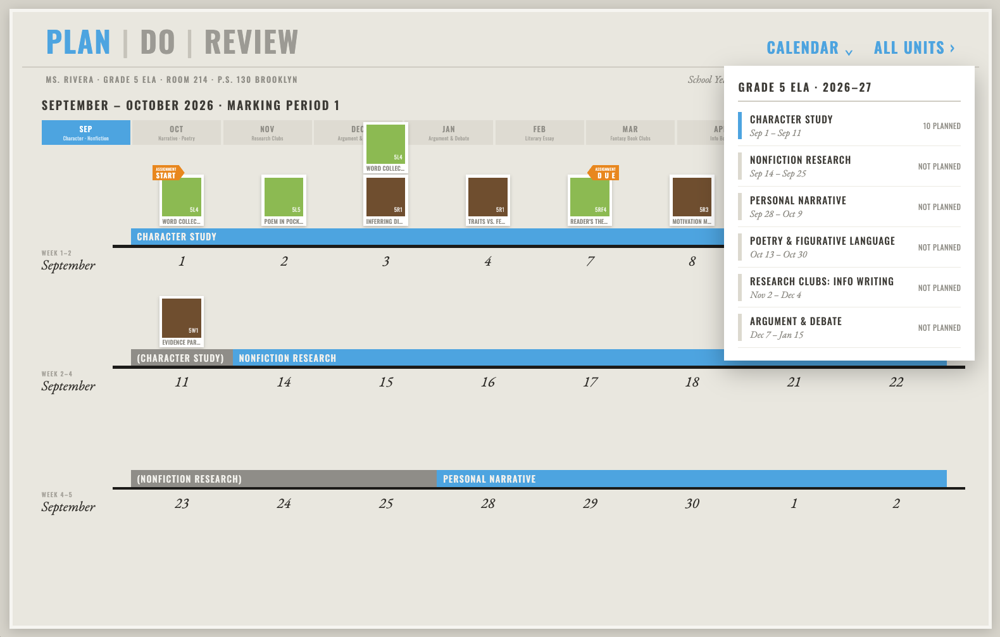

The Ask課題
A classroom teacher plans a whole school year in a paper planbook, tracks standards in a district spreadsheet, and runs each day from memory or a sticky note. Nothing connects the plan to what actually gets taught — or to whether the standards were ever covered. 教師は年間計画を紙のプランブックで作り、基準の達成状況を地区のスプレッドシートで管理し、日々の授業は記憶や付箋を頼りに進めている。計画と実際に教えた内容、そして基準が本当にカバーされたかどうかはつながっていなかった。
The Solution解決策
The brief: design a single, humane tool that ties long-range planning, the daily teaching hour, and standards coverage together — and makes planning a year feel approachable instead of paralyzing. Everything lives inside a single rhythm — Plan → Do → Review — so the plan becomes the teaching day, and the teaching day becomes the record. 長期計画、日々の授業時間、基準のカバー状況をひとつにつなぐ、人間的なツールを設計すること。年間計画を麻痺するような作業ではなく、取り組みやすい体験にすること。すべてを Plan → Do → Review のリズムに収めることで、計画が授業になり、授業が記録になる。
Tools & Methodsツール＆手法
Try It — Live Prototype触って試す — ライブプロトタイプ
This is the ClaudeDesign live prototype, the source of truth for the EduTrack design system. Lessons behave like physical index cards: drag them onto days, move through Plan / Do / Review, open a lesson, capture a conference note, and see coverage emerge from the work itself. これは ClaudeDesign のライブプロトタイプで、EduTrack デザインシステムのソース・オブ・トゥルースです。レッスンは物理的なインデックスカードのように扱えます。日付へドラッグし、Plan / Do / Review を移動し、レッスンを開き、カンファレンスメモを残し、作業そのものからカバー状況が立ち上がります。
Best experienced on a larger screen. If the prototype doesn't load in the frame, open it full screen ↗大きな画面での操作を推奨します。フレーム内で表示されない場合は、フルスクリーンで開いてください ↗
Design Systemデザインシステム
A planbook, not a dashboard.ダッシュボードではなく、プランブック。
EduTrack looks like a beloved paper planbook, not a dashboard. Lessons are physical index cards you pick up and place on days. Surfaces are warm paper; corners are square; shadows say how far off the desk a piece of paper is. Deliberately the opposite of sterile edtech. EduTrack はダッシュボードではなく、愛着のある紙のプランブックのように見える。レッスンは手に取って日付に置く物理的なインデックスカード。サーフェスは温かい紙、角はスクエア、影は紙が机からどれだけ浮いているかを表す。無機質な EdTech とは意図的に逆の方向です。
01 — Plan: A lesson shelf of ready-to-teach cards above a year-long timeline of every unit.01 — Plan（計画）：すぐ教えられるレッスンカードの棚と、全ユニットを見渡す年間タイムライン。

02 — Planning screens and scheduling states.02 — 計画画面とスケジューリング状態。


03 — Assignment views and classroom planning details.03 — 課題ビューと教室計画の詳細。


04 — Semester overview and supporting planner surfaces.04 — 学期全体の俯瞰と補助的なプランナー画面。


Deliverables成果物
- UX Research & Insight GenerationUX リサーチとインサイトの抽出
- UX StrategyUX戦略
- Wireframing & Prototypingワイヤーフレームとプロトタイピング
- UI Design (iPad)UI デザイン（iPad）
Methods手法
- Persona Creationペルソナ作成
- Stakeholder Mappingステークホルダーマッピング
- Journey Mappingジャーニーマッピング
Teamチーム
- Domain Expert (Education)ドメインエキスパート（教育）
- UX ResearcherUXリサーチャー
- Developer開発者